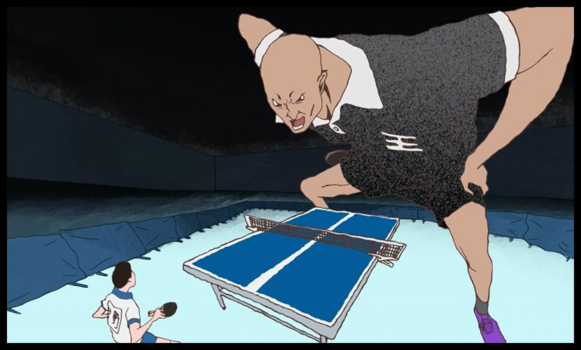
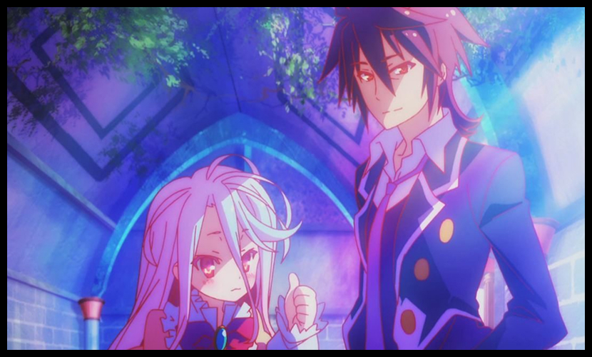
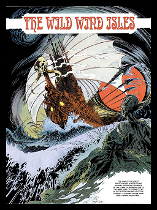
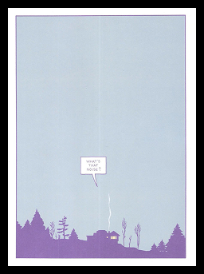

Топ-10 аниме на один вечер: от «Служанки-дракона» до «Сплинга-понга»
Трогательная и проникновенная история, основанная на одноимённой манге Юми Униты. Сюжет рассказывает об успешном менеджере Дайкити Кавати, который на похоронах дедушки неожиданно узнаёт о существовании незаконнорождённой дочери покойного — шестилетней Рин. Мать девочки сбежала, а потому главный герой решает взять её к себе. Дайкити сталкивается со множеством трудностей, связанных с воспитанием ребёнка, и изо всех сил старается адаптироваться к новой жизни: бросает курить и даже решается на понижение в должности, чтобы не оставлять Рин одну. Аниме поднимает важные вопросы взросления и эмоциональной близости, показывая, что семья — это не только кровное родство, но и осознанный выбор.

Служанка-дракон
1. Служанка-дракон
Лёгкая и тёплая история о странной дружбе человека и дракона. Не мудрствует лукаво, но дарует уют.

Девочка, покорившая время
2. Девочка, покорившая время
Немного философии, немного романтики и капля печали. Вещь короткая, но цепкая.

Дети волков
3. Дети волков
История матери и её необычных детей. Трогательно, местами жестоко — но честно.

Сад изящных слов
4. Сад изящных слов
Визуально — пир. Сюжет — тихий и созерцательный. Идеально для дождливого вечера.
Паприка
5. Паприка
Сон и реальность переплетаются. Если любишь странное — бери без сомнений.

Форма голоса
6. Форма голоса
Про вину, про прощение и про взросление. Сильная вещь, не для пустых душ.

Твоё имя
7. Твоё имя
Красиво, мелодично, местами наивно — но цепляет, черт побери.

Ветер крепчает
8. Ветер крепчает
Биография, но в стиле мечты. Не всем зайдёт — но ценителям в радость.

Акира
9. Акира
Классика. Грубая, шумная, культовая. Не смотреть — почти грех.

Сплинга-понг
10. Сплинга-понг
Безумие, ритм, эксперимент. На любителя — но если зайдёт, не отпустит.
Вам может понравиться

Лучшие аниме всех времён
